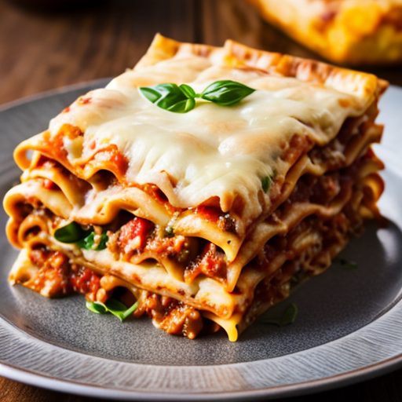

Lasagna Recipe
Home

A hearty and comforting Italian dish made with layers of rich meat sauce, creamy béchamel, and tender pasta sheets—perfect for a family dinner or gathering.
Ingredients
- 2 tbsp olive oil
- 1 onion, finely chopped
- 2 garlic cloves, minced
- 500g ground beef
- 800g canned crushed tomatoes
- 2 tbsp tomato paste
- 1 tsp dried oregano
- 9–12 lasagna sheets (no-boil or regular)
- 200g grated mozzarella cheese
- 50g grated Parmesan cheese
Steps
- Prepare the meat sauce: Heat olive oil in a pan over medium heat. Add chopped onion and cook until soft. Add garlic and cook 1 minute more. Add ground beef and brown it. Stir in crushed tomatoes, tomato paste, oregano, basil, salt, and pepper. Simmer for 20–30 minutes.
- Make the béchamel sauce: In a saucepan, melt butter over medium heat. Stir in flour and cook for 1 minute. Gradually add milk, whisking constantly to avoid lumps. Simmer until thickened. Season with nutmeg, salt, and pepper.
- Preheat oven: Set your oven to 180°C (350°F).
- Assemble the lasagna: In a baking dish, spread a thin layer of meat sauce. Add a layer of lasagna sheets, then a layer of meat sauce, then béchamel, and sprinkle some mozzarella. Repeat the layers (3 times ideally), finishing with béchamel and topping with mozzarella and Parmesan.
- Bake: Cover with foil and bake for 25 minutes. Remove foil and bake an additional 15–20 minutes until golden and bubbling.
- Rest and serve:Let the lasagna sit for 10 minutes before cutting. Serve warm.